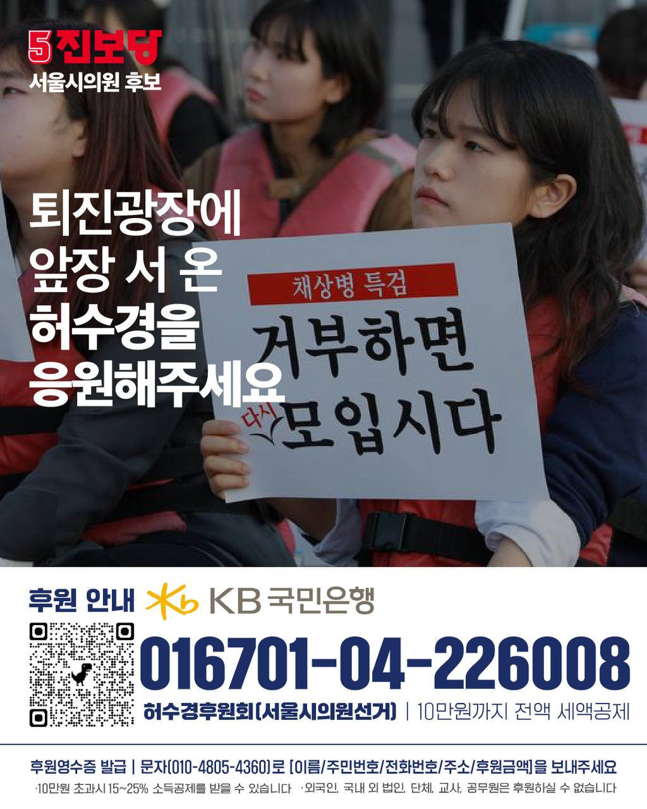

서울시는 10년 동안 여성 안전을 위해 존재했던 제도와 공간을 하나하나 지웠습니다. 그 자리에서 우리가 묻습니다. 서울에서 여성으로 산다는 것은 무엇인가요?
나는봄, 여담재, 위드유센터, 성평등활동지원센터, 여성공예센터 — 직접 사람을 지원하던 기관들이 하나씩 사라졌습니다. 그 사이 여성 안전 예산은 삭감되고 현장 인력은 줄었습니다.
2025년 7월, 나는봄이 문을 닫았습니다.
전국 유일의 시립 10대 여성 건강센터였습니다. 성매매·성폭력 피해 청소년, 임신·탈가정 위기의 10대 여성들이 찾아오던 곳. 2013년 문을 열어 2022~2025년 사이 2,000명 이상을 도왔습니다.
그 청소년들이 이제 갈 곳이 없습니다. 서울시의 예산 삭감 결정 하나로.
전국 최초이자 유일한 시립 10대 여성 건강센터. 성매매·성폭력·임신·탈가정 위기 청소년에게 무료 의료·상담 지원. 2013년 설립 이후 2022~2025년 2,000명 이상 지원.
서울 여성의 역사를 기록·전시하던 공간. 폐관 후 1년 이상 방치. 여성사 전시, 독립운동가 기념 등 다양한 프로그램 운영 중 일방 통보로 사업 종료.
직장 내 성희롱·성폭력 피해자를 지원하고 예방 활동을 담당하던 전문 센터. 오세훈 시정 출범 이후 폐관.
성평등 문화 확산과 시민 활동을 지원하던 거점 공간. 조례 폐지와 함께 운영 종료.
국내 유일 여성 공예 창업 지원 시설. 일방적 통보로 사업 종료.
2013년 시작. 밤 10시~새벽 1시 귀가 동행 서비스. 2021년 420명 → 2026년 시 직영 60명. 예산은 2021년 대비 89% 삭감.
서울특별시 성인지 예산서 기준 (단위: 백만원)
출처: 서울특별시 성인지 예산서 2024·2025·2026년도
지원은 줄어들었지만, 위협은 사라지지 않았습니다.
서울 여성 2명 중 1명은 밤길이 무섭습니다.
그런데 오세훈 서울시는 안심귀가스카우트 예산을
10년 만에 89% 깎았습니다.
수집된 이야기는 허수경 후보의 정책 활동 및 캠페인에 활용될 수 있습니다. 개인을 특정할 수 있는 정보는 동의 없이 외부에 공개되지 않습니다.
당신의 목소리가 서울을 바꾸는 힘이 됩니다.
이 페이지를 주변에 공유해주세요.
전국 각지의 시민들이 직접 남긴 이야기입니다.
아직 메시지가 없습니다. 지지 선언 후 첫 번째 메시지를 남겨주세요.
정책은 현실에서 시작해야 합니다. 당신의 경험이 변화의 근거가 됩니다.
고등학생 때 9,000만 원을 모아 소녀상을 세우고,
대학에서 전국 여성들의 목소리를 모았습니다.
그 길이 지금 서울시의회로 이어집니다.
2000년 5월 11일생. 광양에서 나고 자라며 일본군 위안부 문제에 일찍이 눈을 떴습니다.
청소년 신분으로 광양시민사회단체 연대회의 건립운동에 주도적으로 참여. 목표액 8,000만 원을 초과한 9,000만 원 이상 모금에 성공. 2018년 3월 1일 전국 97번째 소녀상 제막식.
서울여대에 진학해 여성 운동의 거점을 만들었습니다. 페미니즘 소모임 'FIREWORK'을 주도하며 여성학 강의 확대를 이끌어냈습니다.
학생 자치 활동과 대외 연대 사업을 총괄. 평화나비 서울여대지부를 이끌며 정기 수요시위 주관, 역사기행 기획, 정의기억연대와 연대 활동을 벌였습니다.
일본군 성노예제 문제 해결을 위한 전국 대학생 연대 단체 '평화나비네트워크'의 전국대표를 역임. 전국 대학생 네트워크를 이끌며 위안부 피해자 인권 회복 운동을 주도했습니다.
전국 대학생 등록금 인상 반대 운동과 학생 권리 확대를 위한 활동을 전개했습니다.
진보당 조직부장 및 인권위원회 간사로 활동하며 퇴진 광장의 최전선에서 민주주의 수호 운동에 앞장섰습니다.
오세훈 서울시가 지워버린 여성 안전 예산·기관을 되돌리고, 2030 여성의 목소리를 서울시의회에 직접 전달하기 위해 출마했습니다.
안심귀가스카우트를 대체할 새 모델을 만듭니다. 심야 여성 전용 택시 바우처, 편의점·약국 안심귀가존 지정, AI 기반 안심귀가 앱 연계를 통해 실효성 있는 귀가 안전망을 구축합니다.
2025년 폐쇄된 '나는봄' 같은 10대 여성 전문 지원 기관을 성북구에 복원·신설해 위기 청소년의 의료·상담 공백을 해소합니다.
서울시 디지털 성범죄 피해자 원스톱 지원 체계를 강화하고, 성북구 내 전담 상담·법률 지원 창구를 신설합니다.
스토킹·교제폭력 피해자를 위한 긴급 주거 지원 및 피해자 동행 서비스를 확대해 재피해를 방지합니다.
폐관된 서울여담재·위드유센터 등 여성 역사·지원 공간을 복원하고, 새로운 성평등 문화 거점을 성북구에 만들겠습니다.
캠프에서 곧 연락드리겠습니다.
함께 서울을 바꿔봅시다.

10만 원까지 전액 세액공제 됩니다.
작은 후원이 서울을 바꾸는 힘이 됩니다.